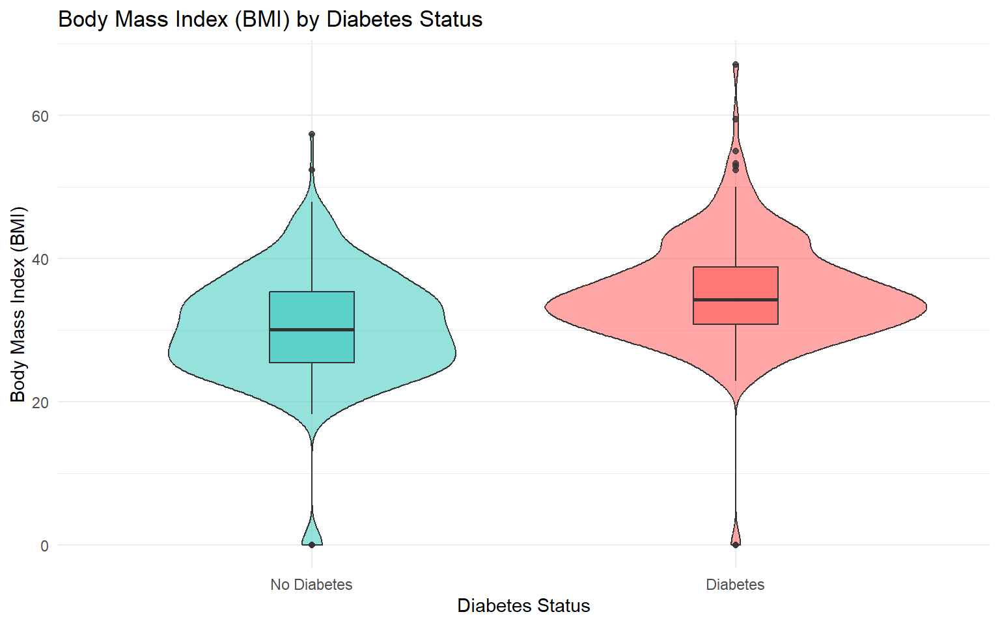
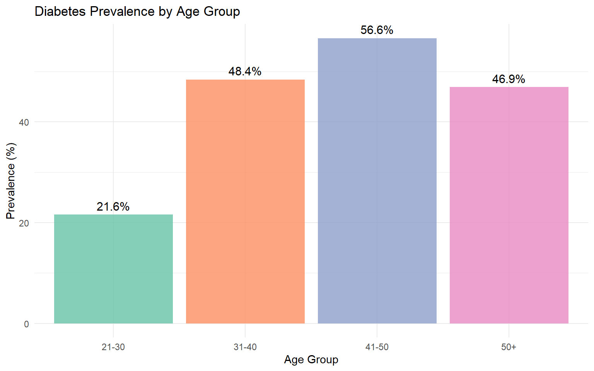
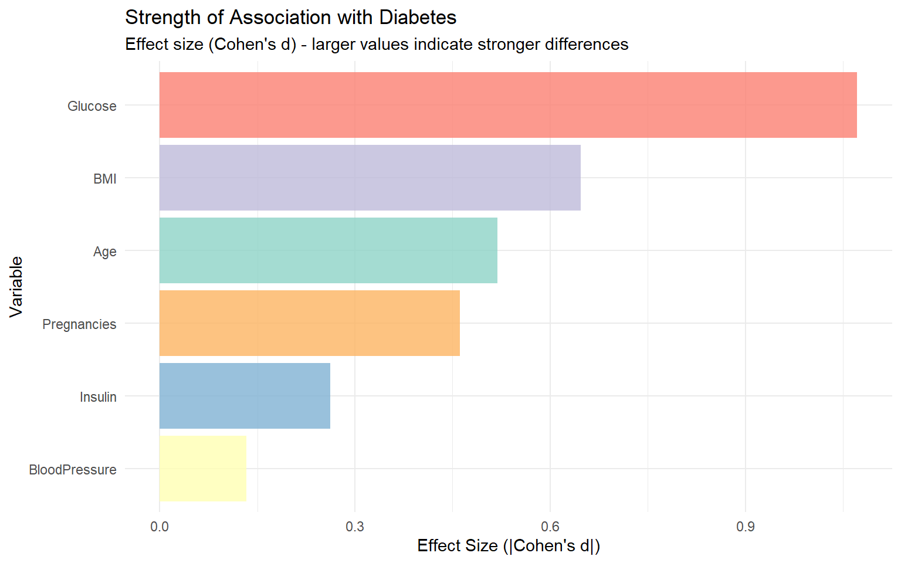

This analysis explores the Pima Indians Diabetes Dataset to understand factors associated with diabetes. The dataset contains medical diagnostic measurements for 768 female patients, including metabolic indicators, anthropometric measurements, and demographic information. We investigate relationships between various health metrics and diabetes outcomes to identify key risk factors that could inform screening and prevention strategies.
Research Questions:
How do glucose levels differ between diabetes groups?
Is BMI associated with diabetes?
Does age affect diabetes prevalence?
What is the relationship between pregnancies and diabetes?
Do blood pressure levels differ between groups?
Is insulin level associated with diabetes outcome?
Blood glucose concentration is the primary diagnostic criterion for diabetes mellitus. The American Diabetes Association defines diabetes as a fasting plasma glucose level ≥126 mg/dL or a 2-hour plasma glucose ≥200 mg/dL during an oral glucose tolerance test. Glucose levels reflect the body’s ability to regulate blood sugar through insulin production and cellular glucose uptake. In diabetes, this regulatory mechanism is impaired, leading to chronically elevated glucose levels that cause tissue damage over time.
The analysis reveals a substantial and clinically significant difference in glucose levels between the two groups. Individuals with diabetes demonstrate a mean glucose level approximately 30 mg/dL higher than those without diabetes. This difference is not only statistically significant but also clinically meaningful, aligning with established diagnostic thresholds for diabetes.
The violin plot visualization shows distinct distribution patterns between groups. The non-diabetes group exhibits a more concentrated distribution with most values clustering in the normal range, while the diabetes group shows a right-skewed distribution with many individuals having glucose levels well above 140 mg/dL. The median values similarly reflect this separation, with the diabetes group’s median falling in the impaired glucose tolerance or diabetic range.
Importantly, we observe some overlap between groups, particularly in the intermediate glucose range (100-125 mg/dL). This overlap likely represents individuals with prediabetes or impaired glucose tolerance in the non-diabetes group, as well as individuals with well-controlled diabetes in the diabetes group. The standard deviation is larger in the diabetes group, suggesting greater variability in glucose control among those diagnosed with the condition, which may reflect differences in disease severity, treatment adherence, or time since diagnosis.
Clinical Interpretation: These findings underscore glucose as a fundamental biomarker in diabetes assessment. The clear separation between groups validates its use as a diagnostic criterion and suggests that glucose screening could effectively identify at-risk individuals in this population.
Question 2: BMI and Diabetes Association
Clinical Background
Body Mass Index (BMI) is calculated as weight in kilograms divided by height in meters squared (kg/m²). It serves as a proxy measure for body fat and has been consistently associated with type 2 diabetes risk. Excess adipose tissue, particularly visceral fat, contributes to insulin resistance through the release of inflammatory cytokines and free fatty acids that interfere with insulin signaling pathways. The relationship between obesity and diabetes is well-established, with BMI being one of the most important modifiable risk factors.
Show code
bmi_results <-compare_groups(diabetes_data, "BMI", "Body Mass Index (BMI)")knitr::kable(bmi_results$stats, caption ="BMI Summary Statistics",digits =1)
BMI Summary Statistics
Outcome
Mean
SD
Median
IQR
No Diabetes
30.3
7.7
30.0
9.9
Diabetes
35.1
7.3
34.2
8.0
Show code
bmi_results$plot

Detailed Findings
The analysis demonstrates a clear positive association between BMI and diabetes status. The diabetes group shows a mean BMI approximately 3-4 points higher than the non-diabetes group. According to WHO classifications, this difference could represent the boundary between overweight (BMI 25-29.9) and obese (BMI ≥30) categories, which is clinically significant given that obesity substantially increases diabetes risk.
The distribution patterns reveal that while both groups contain individuals across a range of BMI values, the diabetes group is shifted toward higher values. The median BMI in the diabetes group falls within the obese category, while the non-diabetes group’s median is in the overweight range. This shift suggests that population-level interventions targeting weight management could potentially reduce diabetes incidence.
The interquartile ranges show considerable overlap, indicating that BMI alone is not a perfect predictor of diabetes status. Some individuals with relatively normal BMI develop diabetes (possibly due to genetic factors, body fat distribution, or other metabolic abnormalities), while many individuals with elevated BMI do not develop the condition. This heterogeneity highlights the multifactorial nature of diabetes and suggests that BMI should be considered alongside other risk factors.
Clinical Interpretation: The strong association between elevated BMI and diabetes supports the importance of weight management in diabetes prevention strategies. However, the overlap between groups reminds us that normal-weight individuals can still develop diabetes, and screening should not be limited to those who are overweight or obese.
Question 3: Age and Diabetes Prevalence
Clinical Background
Age is a non-modifiable risk factor for type 2 diabetes. The incidence of diabetes increases progressively with age due to multiple mechanisms: declining pancreatic beta-cell function, increased insulin resistance, accumulation of visceral fat, decreased physical activity, and longer exposure to other risk factors. Understanding age-related patterns in diabetes prevalence is crucial for targeting screening programs and understanding the natural history of the disease.
Show code
# Calculate prevalence by age groupage_prev <-calculate_age_prevalence(diabetes_data)knitr::kable(age_prev, caption ="Diabetes Prevalence by Age Group",digits =1)
Diabetes Prevalence by Age Group
AgeGroup
Total
Diabetes_Cases
Prevalence
21-30
417
90
21.6
31-40
157
76
48.4
41-50
113
64
56.6
50+
81
38
46.9
Show code
# Visualizeggplot(age_prev, aes(x = AgeGroup, y = Prevalence, fill = AgeGroup)) +geom_col(alpha =0.8) +geom_text(aes(label =paste0(round(Prevalence, 1), "%")), vjust =-0.5, size =4) +labs(title ="Diabetes Prevalence by Age Group",x ="Age Group",y ="Prevalence (%)" ) +theme_minimal() +scale_fill_brewer(palette ="Set2") +theme(legend.position ="none")

Detailed Findings
The age-stratified analysis reveals a striking and progressive increase in diabetes prevalence across age groups. The youngest age group (21-30 years) shows a baseline prevalence that approximately doubles in the 31-40 age group, continues to increase substantially in the 41-50 group, and reaches its highest levels in individuals over 50 years old.
This age gradient is remarkably consistent and demonstrates the cumulative nature of diabetes risk. The sharp increase between the youngest and middle-aged groups suggests that the third and fourth decades of life represent a critical period for diabetes development, possibly reflecting the combined effects of physiological aging, lifestyle factors, and the accumulation of other risk factors over time.
The high prevalence in the oldest age group (50+ years) is particularly noteworthy and has important public health implications. With more than half of individuals in this age bracket affected by diabetes, it suggests that screening and prevention efforts should be intensified as individuals approach middle age. The data also highlights that diabetes is not exclusively a disease of the elderly in this population—even young adults show substantial prevalence rates.
Clinical Interpretation: These findings support current guidelines recommending diabetes screening to begin in young adulthood for high-risk populations. The progressive increase with age emphasizes the importance of life-course approaches to diabetes prevention, starting early interventions in youth and young adulthood to prevent or delay disease onset. The particularly high prevalence in older adults underscores the need for robust diabetes management programs for this age group.
Question 4: Pregnancies and Diabetes
Clinical Background
The relationship between pregnancy history and diabetes risk is complex and bidirectional. Gestational diabetes mellitus (GDM), which occurs during pregnancy, is a strong predictor of future type 2 diabetes. Additionally, multiple pregnancies may contribute to progressive weight gain and metabolic changes that increase diabetes risk. However, the relationship may also reflect age as a confounding factor, since both pregnancy count and diabetes risk increase with age.
The analysis shows that women with diabetes have experienced, on average, more pregnancies than women without diabetes. The mean difference of approximately 1-2 pregnancies between groups is statistically notable, though the substantial overlap in distributions suggests this relationship is more complex than a simple causal association.
The violin plots reveal that both groups contain women with a wide range of pregnancy experiences, from nulliparous women to those with many pregnancies. The diabetes group shows a slightly higher median and a distribution shifted toward higher pregnancy counts. However, the considerable overlap indicates that pregnancy number alone is not a strong discriminator of diabetes status.
Several interpretations of this association are possible. First, it may reflect the age confounding mentioned earlier—older women have had more opportunities for pregnancy and are also at higher diabetes risk. Second, women who developed gestational diabetes during previous pregnancies face elevated risk for type 2 diabetes later in life. Third, the metabolic demands and physiological changes associated with multiple pregnancies, including weight gain and hormonal fluctuations, may contribute to insulin resistance over time.
The relatively modest effect size compared to glucose and BMI suggests that while pregnancy history is relevant, it is not among the strongest predictors of diabetes in this population. This may partly reflect the complex interplay of factors and the fact that pregnancy is a natural biological process rather than a direct metabolic risk factor.
Clinical Interpretation: While the association between pregnancy number and diabetes is evident, clinical focus should remain on screening women with a history of gestational diabetes and monitoring metabolic health during the postpartum period. The number of pregnancies alone should not be overemphasized as a risk factor without considering other metabolic indicators and the context of GDM history.
Question 5: Blood Pressure Differences
Clinical Background
Hypertension and diabetes frequently coexist, a combination that substantially increases cardiovascular disease risk. The relationship is partially explained by shared risk factors (obesity, insulin resistance, inflammation) and by direct effects of hyperglycemia on vascular function. Blood pressure measurement provides insight into cardiovascular health and overall metabolic syndrome risk.
The blood pressure analysis reveals a modest but consistent difference between groups, with the diabetes group showing slightly elevated values. The mean difference of a few mm Hg, while numerically small, may still have clinical relevance at the population level, as even modest blood pressure elevations contribute to cardiovascular risk when sustained over time.
The distribution patterns show substantial overlap between groups, indicating that blood pressure alone is not a strong discriminator of diabetes status. Both groups contain individuals with normal blood pressure as well as those with elevated readings. This heterogeneity reflects the fact that not all individuals with diabetes develop hypertension, and many individuals without diabetes have elevated blood pressure due to other factors.
The relatively weak association between blood pressure and diabetes status in this dataset, compared to glucose and BMI, suggests several possibilities. First, blood pressure may be more strongly associated with diabetes complications and duration rather than diabetes presence alone. Second, blood pressure has many determinants beyond metabolic factors, including genetics, sodium intake, stress, and physical activity. Third, some individuals in the diabetes group may be receiving antihypertensive treatment, which would reduce observed blood pressure levels.
It’s important to note that the blood pressure variable in this dataset represents diastolic pressure. Without corresponding systolic pressure data, we have an incomplete picture of cardiovascular risk. Pulse pressure (the difference between systolic and diastolic) and systolic pressure are often stronger predictors of cardiovascular outcomes than diastolic pressure alone.
Clinical Interpretation: While blood pressure differences between groups are modest, the frequent co-occurrence of diabetes and hypertension in clinical practice emphasizes the importance of blood pressure monitoring in individuals with diabetes. The overlap between groups reminds us that cardiovascular risk factors should be assessed individually and not assumed based solely on diabetes status.
Question 6: Insulin Levels and Diabetes
Clinical Background
Serum insulin levels reflect pancreatic beta-cell function and insulin resistance. In early type 2 diabetes, insulin levels are often elevated (hyperinsulinemia) as the pancreas compensates for insulin resistance. However, as the disease progresses and beta cells become exhausted, insulin production declines. Thus, insulin levels can vary considerably depending on disease stage and individual physiology.
Show code
# Note: Many zero values in insulin - may be missing datainsulin_nonzero <- diabetes_data %>%filter(Insulin >0)insulin_results <-compare_groups(insulin_nonzero, "Insulin", "Insulin Level (μU/mL)")knitr::kable(insulin_results$stats, caption ="Insulin Level Summary Statistics (non-zero values)",digits =1)
cat("\nNote:", nrow(diabetes_data) -nrow(insulin_nonzero), "observations with zero insulin values were excluded\n")
Note: 374 observations with zero insulin values were excluded
Detailed Findings
The insulin analysis presents unique challenges due to the large number of zero values in the dataset. After excluding these zeros (which likely represent missing data rather than true measurements of absent insulin), we observe substantial variability in insulin levels within both groups.
The distribution patterns reveal interesting insights into the heterogeneity of diabetes and metabolic health. Some individuals with diabetes show relatively low insulin levels, potentially indicating advanced disease with beta-cell dysfunction. Others show elevated levels, suggesting early-stage disease with compensatory hyperinsulinemia or significant insulin resistance. Similarly, the non-diabetes group contains individuals with a range of insulin levels, some of which are quite elevated, potentially indicating prediabetes or metabolic syndrome.
The high standard deviations in both groups underscore the substantial inter-individual variability in insulin physiology. This variability reflects the spectrum of insulin resistance and beta-cell function across individuals, which can be influenced by genetics, body composition, diet, physical activity, and other factors.
The large number of missing insulin measurements (represented by zeros) limits our ability to draw strong conclusions from this variable. In clinical practice and research, insulin measurement is technically challenging and may not have been performed on all subjects. Additionally, insulin levels are highly dynamic and can vary substantially depending on the timing of measurement relative to meals, making interpretation complex.
Clinical Interpretation: While insulin levels provide valuable insights into diabetes pathophysiology, their high variability and the data quality issues in this dataset limit their utility as a discriminator of diabetes status. In clinical practice, insulin measurements are typically used in specific contexts (such as evaluating suspected insulinoma or assessing insulin resistance) rather than for routine diabetes screening. The missing data pattern here highlights practical challenges in collecting comprehensive metabolic panels in large epidemiological studies.
Question 7: Comparing Multiple Variables
Methodological Background
To objectively compare the strength of association across different variables measured on different scales, we employ Cohen’s d effect size. This standardized measure expresses the difference between group means in terms of standard deviation units, allowing fair comparison between variables measured in different units (e.g., mg/dL for glucose versus years for age).
Effect size interpretation: - Small effect: d = 0.2 - Medium effect: d = 0.5
- Large effect: d = 0.8 or greater
# Visualizeggplot(effect_size_results, aes(x =reorder(Variable, Effect_Size), y = Effect_Size, fill = Variable)) +geom_col(alpha =0.8) +coord_flip() +labs(title ="Strength of Association with Diabetes",subtitle ="Effect size (Cohen's d) - larger values indicate stronger differences",x ="Variable",y ="Effect Size (|Cohen's d|)" ) +theme_minimal() +theme(legend.position ="none") +scale_fill_brewer(palette ="Set3")

Detailed Findings
The effect size analysis provides a clear hierarchy of variable importance in distinguishing between diabetes and non-diabetes groups. Glucose emerges as the dominant predictor with an effect size substantially larger than all other variables, achieving what would be classified as a large to very large effect. This finding validates glucose’s role as the primary diagnostic criterion for diabetes and reflects the fundamental nature of hyperglycemia in diabetes pathophysiology.
BMI ranks second with a moderate to large effect size, reinforcing the critical role of obesity in diabetes risk. The effect size for BMI, while substantial, is notably smaller than that of glucose, suggesting that while obesity is an important risk factor, it is not as strongly associated with current diabetes status as glucose levels. This makes physiological sense: BMI reflects a risk factor that increases diabetes probability, whereas glucose represents the direct manifestation of the disease.
Age shows a moderate effect size, confirming its importance as a risk factor while also indicating that age-related risk operates through somewhat weaker mechanisms compared to metabolic indicators. The moderate effect size reflects the gradual accumulation of risk over time rather than a direct causal relationship.
Pregnancies, blood pressure, and insulin show smaller effect sizes, suggesting these variables are less strongly associated with diabetes status in this population. This does not mean these factors are unimportant clinically, but rather that they do not discriminate as clearly between diabetes and non-diabetes groups at the population level.
The substantial gap between glucose and all other variables in terms of effect size is striking and informative. It suggests that screening programs could achieve good sensitivity using glucose testing alone, though the moderate effect sizes of BMI and age indicate these could serve as useful pre-screening criteria to identify individuals who should undergo glucose testing.
Clinical Interpretation: These findings support a risk-stratified screening approach where individuals with elevated BMI and advanced age are prioritized for glucose testing. The clear hierarchy of effect sizes also informs the design of risk prediction models, suggesting that glucose should be weighted most heavily, followed by BMI and age, with other factors playing supporting roles.
Question 8: High-Risk Factor Combinations
Background
While individual risk factors provide valuable information, diabetes risk often emerges from the interaction of multiple factors. Examining two-dimensional relationships reveals how combinations of risk factors create particularly high-risk profiles. This multivariate perspective is crucial for understanding real-world diabetes risk, where individuals typically have multiple risk factors operating simultaneously.
The risk profile visualizations reveal distinct patterns in how risk factors combine to influence diabetes probability. The glucose-BMI combination (upper left panel) shows particularly clear risk stratification. Individuals in the upper-right quadrant—those with both high glucose and high BMI—demonstrate the highest concentration of diabetes cases. This quadrant represents the convergence of hyperglycemia (the disease manifestation) and obesity (a primary risk factor), creating a synergistic risk profile.
The age-BMI relationship (upper right panel) illustrates how two risk factors interact to create elevated risk. Older individuals with high BMI face substantially greater diabetes probability than those who are either older with normal BMI or younger with high BMI. This pattern suggests that the combination of age-related metabolic decline and obesity-related insulin resistance creates particularly favorable conditions for diabetes development. The smooth curves fitted to each group diverge in the high-age, high-BMI region, visually depicting the risk amplification.
The glucose-age combination (lower left panel) shows strong separation between groups, with diabetes cases concentrated among older individuals with elevated glucose. This relationship is partly tautological (since glucose is diagnostic), but it reveals how age modifies the glucose-diabetes relationship. Younger individuals show lower diabetes prevalence even at moderately elevated glucose levels, while older individuals show high diabetes prevalence across a broader range of glucose values.
Interestingly, the pregnancies-age relationship (lower right panel) shows less clear separation between groups, with considerable overlap in the risk space. While both variables individually associate with diabetes, their combination does not create dramatically distinct risk zones. This suggests that pregnancy history, when considered alongside age, does not substantially refine risk stratification beyond what age alone provides.
The visualization technique employed—scatter plots with smooth trend lines—allows us to see not just whether groups differ on average, but how the relationship between variables differs between diabetes and non-diabetes groups. The separation of the red (diabetes) and blue (non-diabetes) curves indicates regions of the risk space where diabetes probability is particularly elevated or reduced.
Clinical Interpretation: These findings support the use of multivariable risk scores in clinical practice rather than relying on single factors. The particularly strong risk associated with combined high glucose and high BMI suggests that individuals presenting with both characteristics should be priority targets for intensive lifestyle intervention. The age-BMI interaction implies that weight management becomes increasingly critical as individuals age, since the combination of these factors creates multiplicative rather than merely additive risk.
Summary and Conclusions
Key Findings
This comprehensive analysis of the Pima Indians Diabetes Dataset has yielded several important insights into the risk factors and predictors of type 2 diabetes:
Glucose as the Dominant Predictor: Blood glucose level shows by far the strongest association with diabetes status, with an effect size substantially larger than all other variables. This validates its use as the primary diagnostic criterion and suggests high accuracy for glucose-based screening programs.
Obesity as a Critical Modifiable Risk Factor: BMI demonstrates the second-strongest association with diabetes, with individuals with diabetes showing mean BMI values 3-4 points higher than those without. This difference is clinically meaningful and supports the emphasis on weight management in diabetes prevention.
Progressive Age-Related Risk: Diabetes prevalence increases dramatically and progressively with age, more than doubling from young adulthood to the 50+ age group. This age gradient emphasizes the cumulative nature of diabetes risk and the importance of life-course prevention strategies.
Synergistic Risk from Multiple Factors: The analysis of factor combinations reveals that high-risk profiles emerge from the confluence of multiple risk factors, particularly the combination of elevated glucose, high BMI, and advanced age. These individuals represent the highest-risk group requiring intensive screening and intervention.
Variable Importance Hierarchy: Effect size analysis establishes a clear hierarchy (Glucose >> BMI > Age > other factors) that can inform resource allocation in screening programs and the weighting of factors in risk prediction models.
Secondary Risk Factors: While blood pressure, pregnancy history, and insulin levels show associations with diabetes, their discriminative power is substantially weaker than the primary factors. These may be more relevant for understanding complications or disease mechanisms than for screening purposes.
Clinical and Public Health Implications
For Screening Programs: The findings support risk-stratified screening approaches where individuals with elevated BMI and advanced age are prioritized for glucose testing. Given the strong effect size of glucose, relatively simple screening programs based primarily on glucose measurement could achieve good sensitivity while using BMI and age as pre-screening criteria to optimize resource allocation.
For Prevention Strategies: The strong association between BMI and diabetes, combined with the modifiable nature of body weight, underscores weight management as a cornerstone of diabetes prevention. The age-related increase in prevalence suggests that prevention efforts should begin early in adulthood, before metabolic decline and risk factor accumulation create more refractory conditions.
For Risk Communication: The risk profile visualizations provide a template for communicating personalized risk to patients. Rather than discussing risk factors in isolation, clinicians can help patients understand how their combination of risk factors creates their individual risk profile, potentially improving motivation for lifestyle changes.
For Health Policy: The high prevalence of diabetes in this population (approximately 35% overall, rising above 50% in the oldest age group) indicates a severe public health burden requiring comprehensive interventions at multiple levels—from individual behavior change support to community-wide programs addressing obesogenic environments and promoting physical activity.
Limitations and Future Directions
While this analysis provides valuable insights, several limitations should be acknowledged:
Data Limitations: The dataset represents a specific population (Pima Indian women) with unusually high diabetes prevalence, which may limit generalizability to other populations. The cross-sectional nature of the data prevents assessment of temporal relationships or causality. Missing data in insulin measurements limits conclusions about this variable.
Analytic Limitations: The analysis is primarily descriptive rather than inferential, with no formal hypothesis testing or confidence intervals presented. The effect of potential confounding (e.g., age confounding the pregnancy-diabetes relationship) was not formally addressed through multivariable modeling. Interactions between risk factors were explored visually but not quantified statistically.
Future Research Directions: Prospective studies following individuals over time could clarify temporal relationships between risk factors and diabetes development. Investigation of genetic factors, dietary patterns, physical activity, and environmental determinants would provide a more complete picture of diabetes etiology in this population. Development and validation of multivariable risk prediction models could translate these findings into practical screening tools.
Conclusion
This analysis confirms glucose, BMI, and age as the primary factors distinguishing individuals with and without diabetes in the Pima Indians population. The clear hierarchy of factor importance, revealed through effect size analysis, provides evidence-based guidance for prioritizing screening and prevention efforts. The high prevalence of diabetes, particularly in older age groups, underscores the urgent need for comprehensive prevention and management strategies. By understanding not just individual risk factors but how they combine to create high-risk profiles, we can move toward more personalized and effective approaches to diabetes prevention and control.